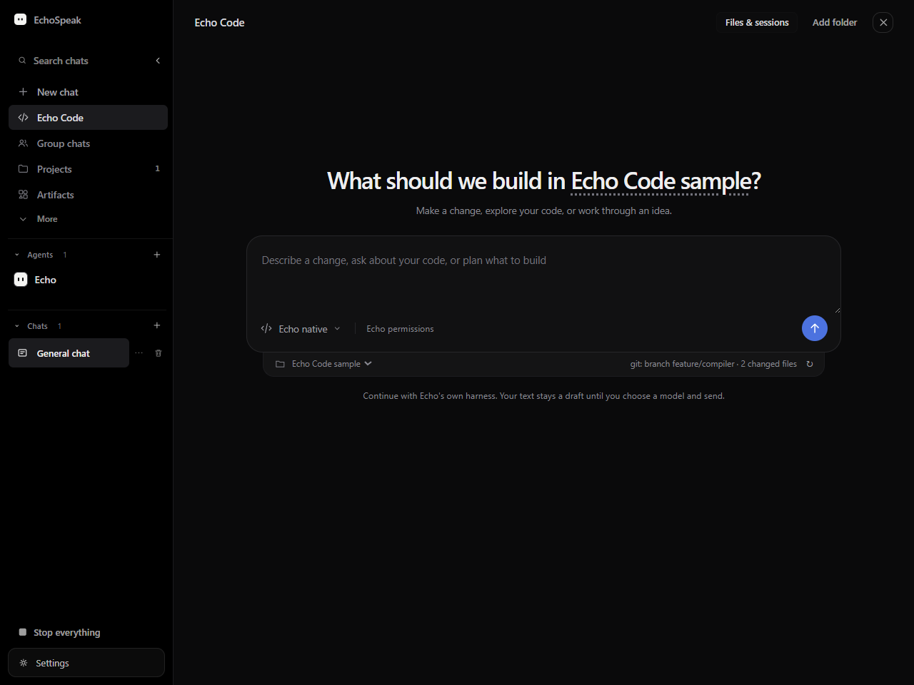
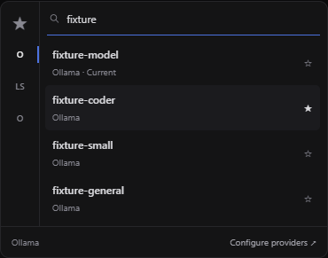

EchoSpeak 11.10.4
Echo Code, shared workspace styling and security hardening · 25 October 2026
A coding workspace using Echo's own harness
Choose a trusted project, enter a task, and continue in a native coding session. The model and reasoning menus share the same compact visual language across Chat and Code.



Security changes included
Build and updater
- Patched dependencies and a checked, hash-pinned Python build environment.
- Version-bound updater signatures, release verification and advisory checking.
- SHA-pinned CI actions and scoped deployment permissions.
Inputs and process defaults
- Malformed HTML mitigation and labeled project instructions.
- Approval for skill proposals after outside content.
- Git bundle URI transfer disabled for children; npx install scripts disabled by default for MCP.
Visual security review · Technical audit and remaining risks
A separate release version, with the same build command
11.10.3 already exists on GitHub. The backend, desktop, web app and package locks now target 11.10.4, so the installer and updater can identify this change as a new version.
Verified baseline
The combined implementation passed 168 backend tests (one skip), 180 frontend tests, 16 desktop contract checks, four Rust tests, fixture UI checks and a packaged-backend smoke test. These were initially run under the 11.10.3 development version.
Fresh preparation checks passed: all 10 version entries, 35 Echo Code/security tests and 16 desktop contract checks. Historical build evidence and pending signed-build status are separated in the verification record.
Owner acceptance still required
The 11.10.4 updater-signed build requires the owner's password-protected signing key locally. Run the normal release script, install the resulting build and test it before publishing.
No installed 11.10.4 or live model acceptance is claimed. External Codex, Claude Code and ACP execution remains unavailable. Windows publisher signing is not configured.